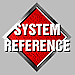

3DO System Programmer's Reference
This book is a command reference. It contains examples of Portfolio procedure calls, syntax, and use. It contains these chapters:
Kernel Folio Calls
- Describes the kernel folio procedure calls.
File Folio Calls
- Lists the file folio calls.
Math Folio Calls
-Lists the math folio procedure calls.
Event Broker Calls
- Lists event broker calls.
Timer Calls
-Lists the Portfolio timer calls.
International Folio Calls
-Lists the International folio calls.
JString Folio Calls
--
Lists the JString folio calls.
Compression Folio Calls
-Lists the Compression folio calls.
Portfolio Items
-Lists the Portfolio items.